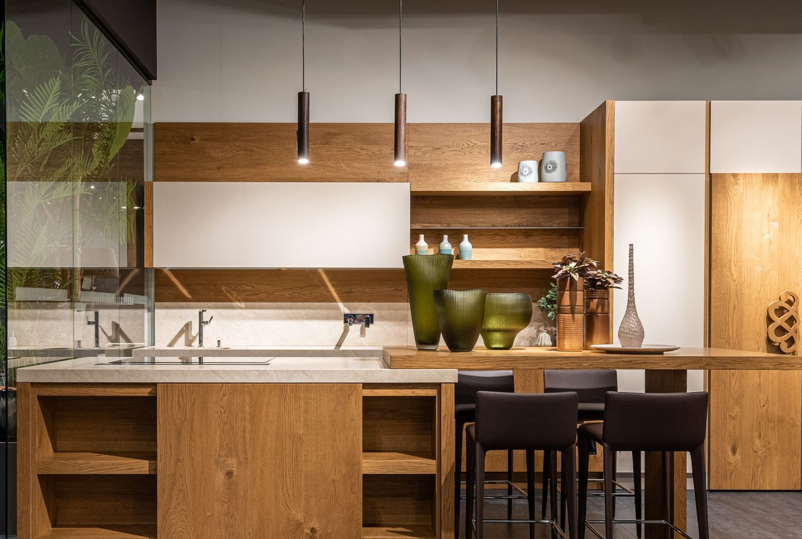
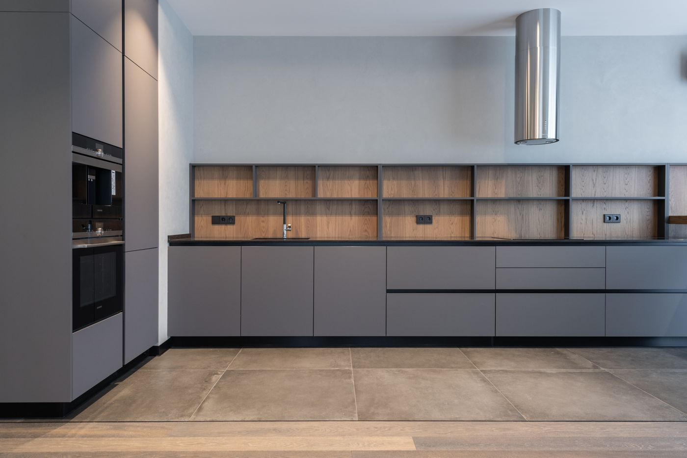
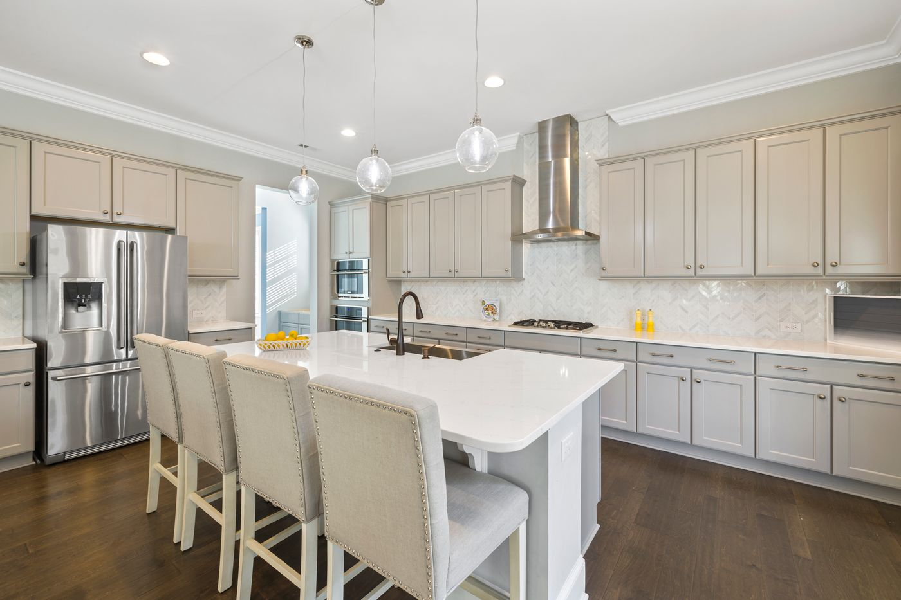
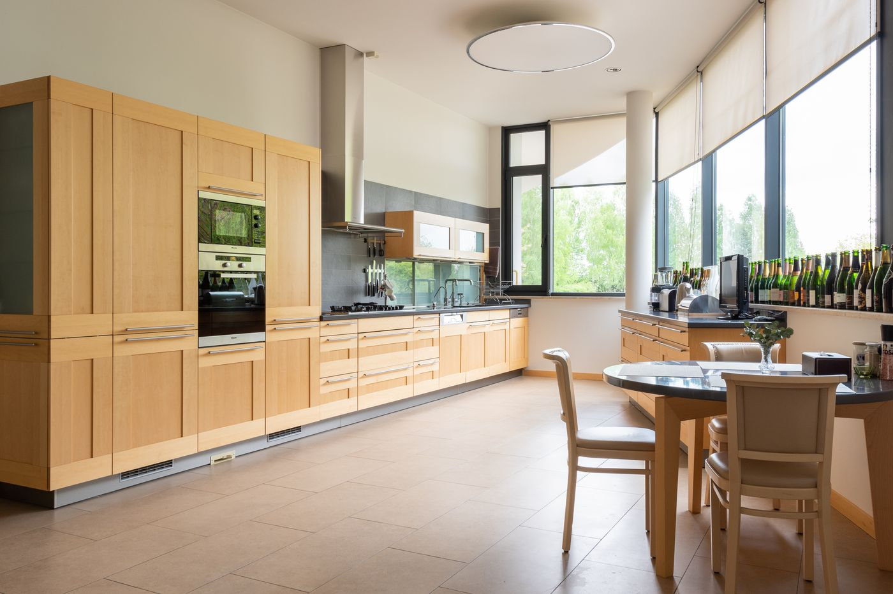
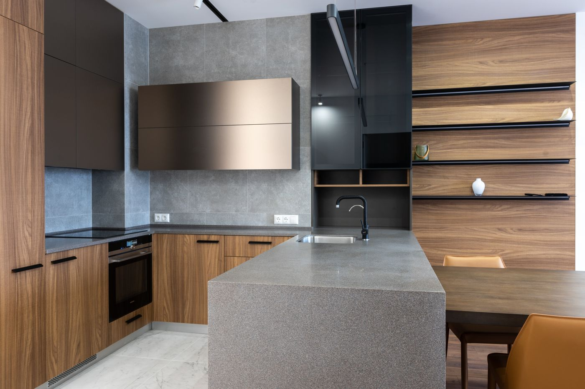
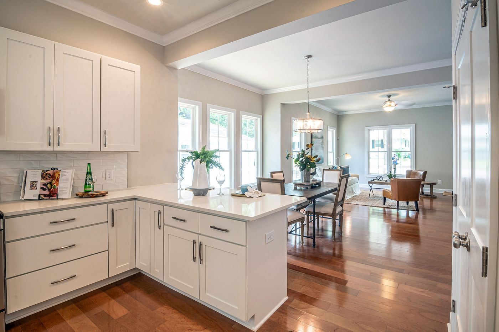
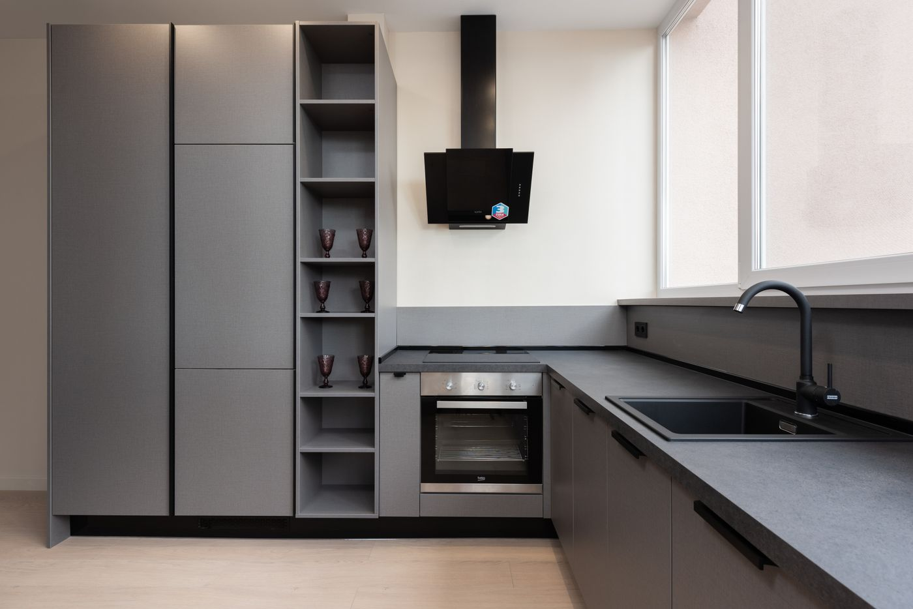

Suruç'ta ölçüye özel mutfak dolabı
Mutfağınızı ölçer, cihazlarınıza ve kullanım alışkanlığınıza göre çizer, kendi atölyemizde üretip monte ederiz. Alt ve üst dolap, boy dolabı, ada: hepsi tek elden.

Temsili görsel- Ücretsiz yerinde keşif
- Üretimden önce çizim
- Atölyeden aracısız fiyat
- Montaj dahil teslim
Hangi tarz size uyar?
Her model ölçünüze göre yeniden çizilir. Renk ve malzemeyi keşifte numunelerle seçersiniz.
Modern kulpsuz
Düz kapak, gizli tutamak profili. Sade ve temiz bir görünüm.
Küçük ve orta mutfaklarKlasik çerçeveli
Membran kapakta çerçeve deseni, sıcak ve geleneksel hava.
Klasik döşenmiş evlerAhşap dokulu
Suntalam kapakta meşe ya da ceviz dokusu. Dayanıklı ve bütçe dostu.
Uygun fiyat arayanlarParlak akrilik
Ayna gibi parlak yüzey, canlı renk seçenekleri.
Gösterişli, aydınlık mutfaklarMutfağınız hangisine benziyor?
Odanın şekli dolap yerleşimini belirler. Keşifte ölçüyü alıp en verimli düzeni birlikte seçiyoruz.
Düz mutfak
Tüm dolaplar tek duvarda. Dar ve uzun mutfaklarda, küçük dairelerde en pratik çözüm.
L mutfak
İki duvarı ve köşeyi kullanır. Orta büyüklükteki mutfaklarda tezgah alanı ile yürüme alanını dengeler.
U mutfak
Üç duvarı kullanır, en fazla dolap ve tezgah alanını verir. Geniş ve kare mutfaklar için.
Ada mutfak
Ortadaki ada hem çalışma tezgahı hem kahvaltı masası olur. Adanın çevresinde en az 1 m geçiş payı gerekir.
Teklifimizde neler var?
- Yerinde ölçü ve çizim
- Alt, üst ve boy dolapları
- Kapak, gövde ve iç raflar
- Frenli menteşe ve çekmece rayları
- Baza, kulp veya tutamak profili
- Ankastre cihaz boşlukları
- Montaj, ayar ve temizlik
Standart ölçüler
| Ölçü | mm |
|---|---|
| Tezgah yüksekliği (yerden) | 900 |
| Alt dolap derinliği | 560–600 |
| Üst dolap derinliği | 320–350 |
| Tezgah ile üst dolap arası | 550–650 |
| Üst dolap yüksekliği | 700–900 |
| Baza yüksekliği | 100–150 |
Bunlar başlangıç ölçüleridir. Boyunuza, odanıza ve kullanımınıza göre değiştiriyoruz.
Mutfak Dolabı işlerimizden






Mutfak Dolabı hakkında
Başka bir sorunuz varsa WhatsApp'tan yazın, aynı gün yanıtlayalım.
Fırın, ocak ve bulaşık makinesi yerleri nasıl ayarlanıyor?
Cihazlarınızın ölçüsüne göre dolap boşluklarını çizimde belirliyoruz. Cihazları önceden almanız gerekmez, model belliyse ölçüsü yeterli.
Lake mi, akrilik mi, membran mı?
Lake mat ve dokunuşu yumuşaktır, renk seçeneği boldur. Akrilik parlak ve kolay silinir. Membran desenli kapaklar için uygundur. Suntalam en ekonomik ve dayanıklı seçenektir. Keşifte numuneleri yan yana gösteriyoruz.
Tezgahı da siz mi yapıyorsunuz?
Tezgah seçeneklerini keşifte konuşuyoruz ve ölçüsünü dolaplarla birlikte alıyoruz. tezgah türleri müşteriden teyit edilecek
Eski mutfağımı söküyor musunuz?
Evet, eski dolapların sökümü işin kapsamına eklenebilir. Keşifte bunu da fiyata yazıyoruz.
Ölçü için ne zaman gelelim?
Suruç içinde keşif ve çizim ücretsiz.